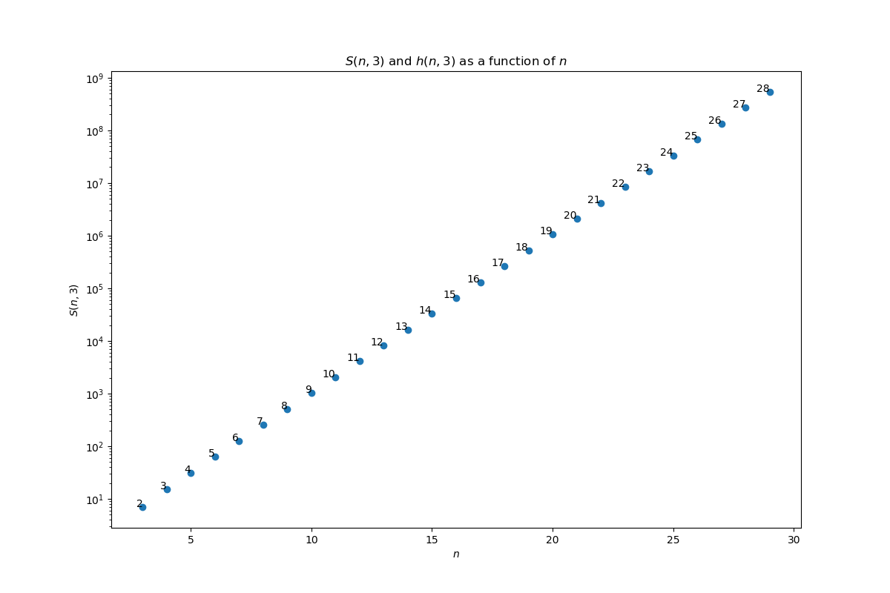
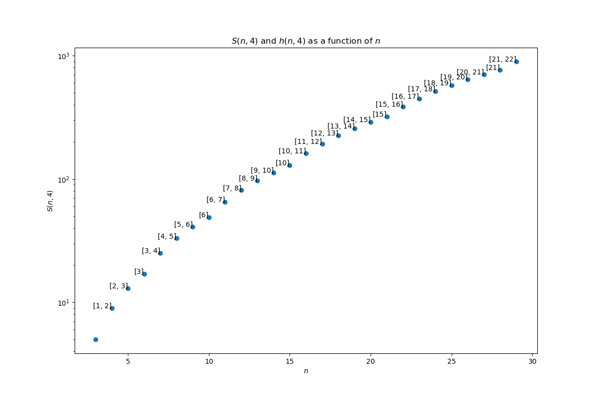
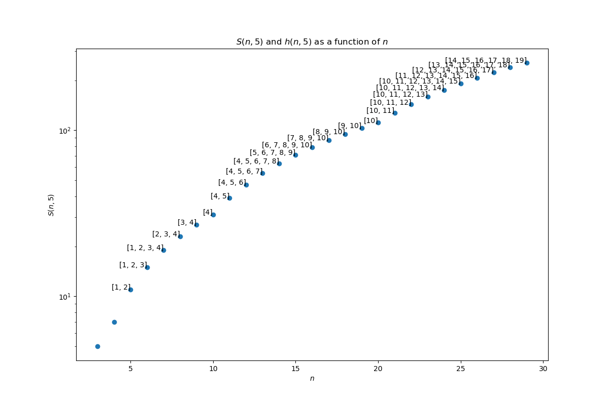
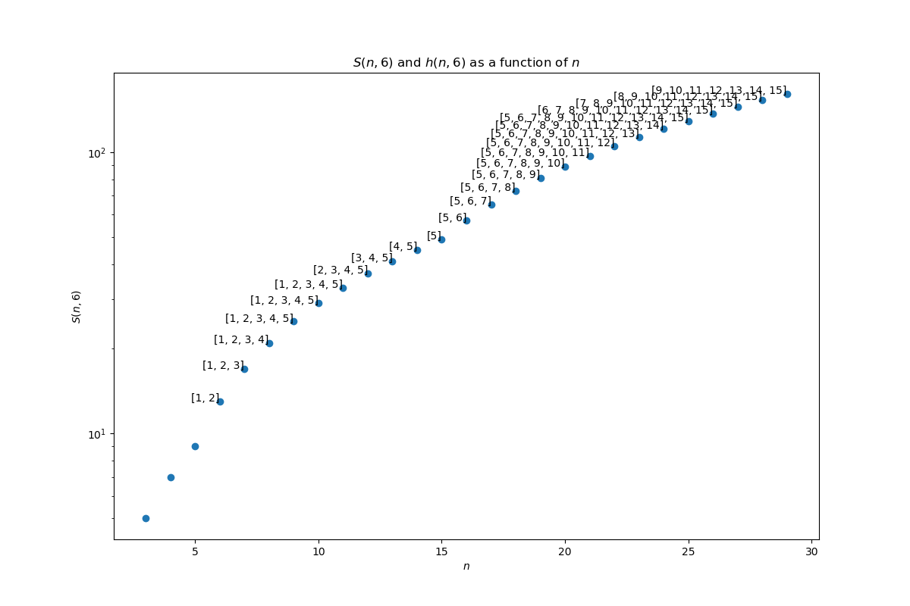

We consider Stewart's algorihm for solving the multi-peg Hanoi Tower problem.
Stewart's algorithm solves the p-peg n-disc from source to destination as follows:
See below for an illustration of this algorithm for n=10 discs.
The number of steps to solve the p-peg n-disc problem satisfies the recurrence relation:
with and
for all
.
For any , an optimal choice
is any that reaches the minimum above.
A reasonable approximation is
with
, and the optimal number of steps is
.
Here are illustrations of the optimal values and the set of minimizers:




These graphs suggest that there are many optimal paths.


Sandi Klavžar, Uroš Milutinović, Ciril Petr. On the Frame–Stewart algorithm for the multi-peg Tower of Hanoi problem. Discrete Applied Mathematics. Volume 120, Issues 1–3, 15 August 2002, Pages 141-157.
Thierry Bousch. La quatrième tour de Hanoï. Bull. Belg. Math. Soc. Simon Stevin Volume 21, Number 5 (2014), 895-912.